前言
本篇我将对dummylua中Table的设计和实现进行介绍和说明。本文的目的旨在梳理清dummylua项目Table的数据结构和运作流程，该部分深度参考了lua-5.3.4的Table设计与实现，由于所有的细节是我自己根据理解重新实现，因此不会在所有的设计细节上和官方lua保持一致，但是遵循了基本的设计思路。
Table是Lua语言中举足轻重的组成部分，掌握和理解它具有战略意义，这也是实现Lua虚拟机的基础所在，本文首先介绍dummylua项目Table的数据结构，然后在概念上介绍一些基本的操作流程，如创建、resize、查询、插入和迭代等操作。
lua table的基本数据结构
现在我们来介绍一下table的基本数据结构，虽然我很反对在一开始就贴代码，但是对于数据结构而言，展示必要的代码反而有助于我们的理解，因此还是决定先把lua table的数据结构代码贴出来，然后再逐步进行解析。1
2
3
4
5
6
7
8
9
10
11
12
13
14
15
16
17
18
19
20
21
22
23
24
25
26
27
28
29
30
31
32
33
34
35
36
37
38
39// luaobject.h
typedef union lua_Value {
struct GCObject* gc;
void* p;
int b;
lua_Integer i;
lua_Number n;
lua_CFunction f;
} Value;
typedef struct lua_TValue {
Value value_;
int tt_;
} TValue;
// lua Table
typedef union TKey {
struct {
Value value_;
int tt_;
int next;
} nk;
TValue tvk;
} TKey;
typedef struct Node {
TKey key;
TValue value;
} Node;
struct Table {
CommonHeader;
TValue* array;
unsigned int arraysize;
Node* node;
unsigned int lsizenode; // real hash size is 2 ^ lsizenode
Node* lastfree;
struct GCObject* gclist;
};
暂时忽略掉gc部分，我们可以看到Table的主要组成部分由一个TValue类型的数组array，以及一个Node类型的数组node。我们的array数组，主要是存放key为整数类型，值为TValue类型的变量。而我们的node数组，主要用于存放key为任意lua类型的变量，实际上node数组是作为hash表使用的。TValue变量主要由表示类型的int类型变量tt_，和表示值的Value类型变量value_组成，而如上所示，Value是一个union类型，它可以表示任意一种lua类型。
我们的Node主要由两个部分组成，一个是TKey类型表示key，一个是TValue类型表示value值，TKey和TValue不同之处在于，它有个部分包含了next域，这个域用于处理hash冲突的情况。Node变量的key和Node数组的下标有着密切的关系，在后面我将详细介绍，现在只需要知道Table主要由两个部分组成，一个数组和一个hash表。现在假设一个刚初始化好的Table变量，它如图1所示：
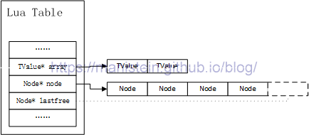
图1展示了一个array的size为2，hash表大小为4的table实例，图中虚线方框部分不属于hash表的一部分，它是紧挨着hash表最后一个元素的一块内存，这块内存，并不允许直接通过lastfree指针对其进行修改，当我们的元素往hash表插入时发生了key冲突，那么要将冲突的其中一个元素转移到空余的node中，而这个空余的node，需要lastfree指针不断向左移动，直至找到第一个空余的node为止，然后将冲突中要被转移的元素存入这个node中。也就是说，未被使用的node只可能存在于lastfree指针的左边，lastfree指向的内存，以及右边的内存均已被使用，或者是不可修改的区域（虚线方框部分）。这种设计可以快速找到空闲的节点。
接下来我们来看一个例子，如图2所示，我们的Table的hash表已经有两个元素，现在有一个新的元素要插入hash表，对该元素的key值进行hash运算后，得到的hash值，根据该hash值，新的Node应该插入的位置被判定到了红色Node处，此时两个Node发生了key冲突。
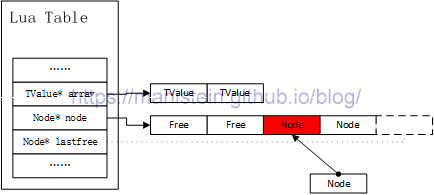
根据lua的处理规则，此时需要将冲突的其中一个Node（后续会介绍规则），放入空闲的节点中。而处理的方法则是lastfree指针不断向左移动，查找空闲节点，如图3所示：
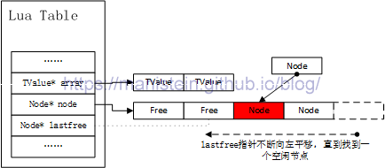
lastfree指针找到空闲节点以后，将冲突的元素写入，如图4所示。此时我们可以发现，正如上述的那样，lastfree所指向的内存块，以及lastfree指针右边的内存块均不是空闲区域，我们要查找空闲节点需要让lastfree指针不断向左移动来快速查找，这样做的好处则是已经被使用的部分不会被遍历，当hash表很大时，能够很大程度上提高效率。
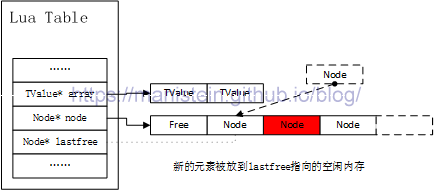
上述流程主要是为了阐明lastfree的主要用途。现在，我们完成了对Table结构的简要介绍，接下来将讨论Table操作的各种流程。
table的创建和初始化
现在我们来介绍table的创建和初始化流程，dummylua几乎原封不动地仿制了官方lua的设计与实现方式，在创建一个table实例时，我们是通过一个叫做luaH_new的接口来进行的，在完成创建后，table实例的结构如图5所示：
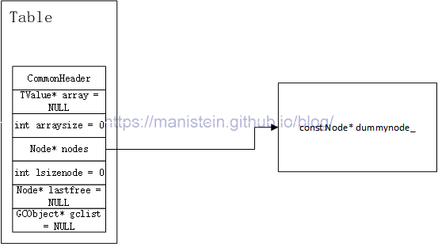
CommonHeader和gclist是gc相关的变量，table被创建时，每个变量都被赋予了初始值。我们可以看到，table实例在被刚创建出来的时候，并没有给array数组和hash表nodes开辟有效的内存空间，array被赋值为NULL，而nodes则被指向了一个被称之为dummynode的全局const变量，lua官方采取了这样的实现。为什么初始化后的nodes要指向这个变量？对于官方版本，有一种说法是，为了避免对nodes进行过多的NULL值判断[1]。
然而我并不认同这种说法，如果是为了避免过多的NULL值判断，为什么array初始化后可以为NULL但nodes不行？针对这个问题，我认为原因可能是这样：正如上一节代码所示，表示hash表nodes大小的lsizenode值，是2的次幂，之所以要如此是为了强制保证nodes的大小一定是2的次幂，避免node的size被错误赋值导致hash表无法正常使用的后果（后面我将介绍为什么nodes的size必须是2的次幂），而初始值lsizenode被赋值为0，2^0的值是1，也就是说就算是table实例被创建出来后，nodes并无实际可用的内存空间，但是lsizenode指明了nodes的尺寸为1，出于逻辑上的严谨性，不论nodes是否可用，他都应该有一个节点，而如果nodes赋值为NULL，nodes和lsizenode的关系就会出现逻辑上的矛盾（lsizenode为0，说明了nodes的节点数是1，但是nodes却为NULL）。初始化后，让nodes指向一个全局常量dummynode，正好解决了这个逻辑上的矛盾，同时lua也提供了判断hash表nodes是否是dummynode的判断，以方便后续对hash表nodes的使用。如图6所示，这个dummynode是全局共享的。
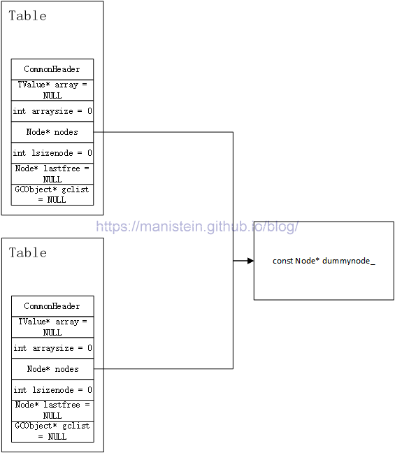
node节点的key与hash表下标之间的关系
到目前为止，我们已经遇到了一个不论如何都无法绕过去的问题，就是要阐述清楚，hash表中的node的key和hash表下标的关系。我们已经了解到，hash表其实是一个size为2^n的一维数组，那key和数组下标又存在怎样的联系呢？
第一节，已经阐述了hash表中的Node节点的数据结构，Node节点的key可以是任意lua类型。那这key值是如何和hash表的下标对应起来的呢？首先要做的一步，就是对key进行hash运算，和官方的lua一样，dummylua提供了对各种类型进行hash运算的接口，将key的值转换成一个int型变量，如下表所示：
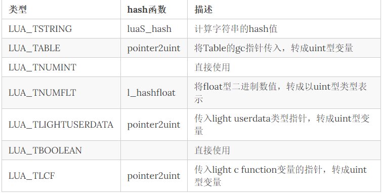
上表展示了的类型，是TKey类型变量中，类型标识tt_的值，可以理解为是个enum变量（实际上是宏定义），用来标记value_是什么类型的。表的另一列，则展示了对应的hash函数，他们的目标都只有一个，将不同类型的变量，转成一个int型变量（计算出的uint值，最终也会被转成int类型来使用）。于是，我们可以把这一切抽象成如图7所示的关系：
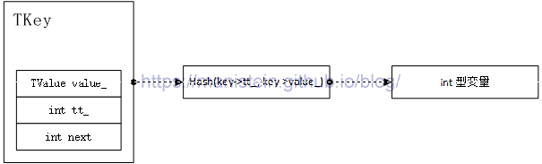
在完成了对key的hash运算以后，我们需要根据key的hash值寻找该key应该位于hash表中的哪个下标，而计算的公式则是：
1 | index = hash_value & ((2 ^ lsizenode) - 1) |
为什么要采取这样的方式？首先我们上面章节已经提到lua table的hash表大小必须是2的n次幂，这样设计的目的是，hash表size - 1得到的值，低位bit位全是1，让我们看一下2 ^ lsizenode - 1的二进制表示的表：
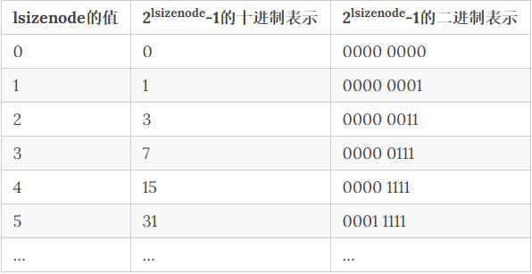
二进制低位全部是1，这样做的好处是，当我们的hash值超出hash表size边界的时候，会被自动回绕回去，而且效率非常高，我们来看一个例子，假设有一个字符串“table”，现在要将他和一个尺寸为8的hash表关联起来，则有：
- 计算”table”这个字符串的hash值，假设得到01101011 00100100 10001101 001011002
- table的hash表的lsizenode值为3，也就是size为8，于是有(2^lsizenode)-1 = 710 = 01112
- 计算”table”在hash表中的下标，于是有01101011 00100100 10001101 001011002 & 01112，由于右边的值高位全是0，因此只需要截取”table”字符串hash值的低4位即可，于是有index = 11002 & 01112 = 01002 = 410
- 于是key为”table”的node，将会被定位到hash[4]的位置上
经过这种操作，hash运算得到的int型数值，最终都会被映射到hash表尺寸范围内的下标中，不用担心超出边界的问题。hash运算本身具备离散性，因此key值可以相对均匀地分布在hash表中，这种设计使得lua table的插入和查找都可以保持很高的效率。
table元素的查找
在介绍完，hash表的下标和hash表中Node的key值的关系后，现在我们就可以来看看table元素的查找流程了。我们需要从被查找元素的Key值是int（也就是LUA_TNUMINT类型）和非int这两种情况来考察，当被查找的元素的key是int类型时，其查找流程如下所示：
- 令被查找元素的key值为k，Table array数组的大小为arraysize
- 判断被查找元素的key值是否在数组范围内(即k <= arraysize是否成立)
若key值在Table的array范围内，则返回array[k - 1]，流程终止
1
2
3
4if (k - 1 < arraysize) {
return array[k - 1];
}
// 进入hash表查找流程若key值不在Table的array范围内，计算key值在hash表中的位置，计算方式为index = k & (2lsizenode-1)，然后以hash[index]节点为起点，查找key值与k相等的node，其伪代码如下所示：
1
2
3
4
5
6
7
8
9
10
11
12
13// 进入hash表查找流程
// k是被查询元素的key值
Node* node = &hash[index];
for (;;) {
if (luaV_equalobject(node.key, k)) {
return node.value_;
}
if (node.next == 0) {
return luaO_nilobject;
}
node = node + node.next;
}
我们可以看到，如果在遍历hash表的过程中，找不到key值与k相等的node时，会返回luaO_nilobject，返回这个值，意味着查询失败。以上是被查询元素的key值是int型的情况，当被查询的key值不是int型时，它将遵循如下流程：
- 计算被查询元素的key(记为k)的hash值，计为key_hash
- 计算key在hash表中的位置，计算方式为index = key_hash & (2lsizenode-1)，然后以hash[index]节点为起点，查询key值与k相等的node，伪代码和key值为int类型时，hash表查询的方式一致。
现在我已经介绍了Table查询的规则了，其本质的逻辑就是试图寻找匹配的value值，如果找不到就返回luaO_nilobject变量。
table值的更新与插入
我们要更新Table，首先会根据上一节提到的方法，查找指定的元素，当返回的元素不是luaO_nilobject对象时，说明查找成功，此时只需要将要更新的值设置到这个TValue变量上，这种情况被称之为更新。图8的例子展示了，一个key值为3，value值为”haha”的元素，要写入table表中（table的array长度为4，hash表长度也为4，且均是NIL值），由于key值3在array的size范围内，因此将直接返回array中的第三个元素，并设置为值”haha”。
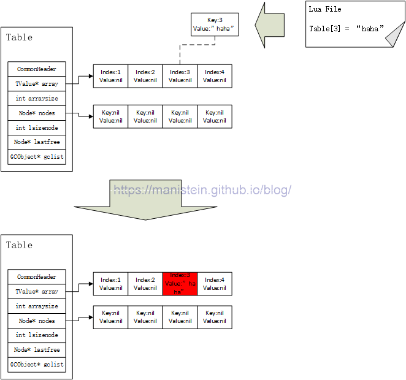
而图9的例子，则尝试更新一个key值为5的域，由于5超出了array的size，因此他会在hash表中查找位置（与图8不同的是，图9已经存在了一个key值为5的node），5的二进制值为01012，hash表的size为4，其二进制值为01002，则index = 5 & (4 - 1) = 01012 & 00112 = 00012 = 1。hash[1]这个Node的key值，与要操作的元素的key值相等，于是更新hash[1]这个Node的Value为指定的值。
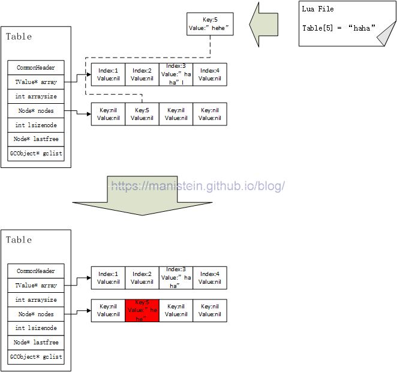
当我们查找指定key值的变量时，如果能找到则返回TValue类型变量的指针，而当找不到指定key值的变量时，则返回值为luaO_nilobject，此时需要创建新的key，并向value_域赋值，这种操作实际上是插入操作。创建key的流程如下所示：
- 计要新建的key值为k，并计算k的hash值，记为k_hash
- 计算key应该落在hash表的哪个位置，计算方式为index = k_hash & (2lsizenode-1)
- 如果hash[index]这个node的value值为nil，将node的key值设置为k的值，并返回value_对象指针，供调用者设置
- 如果hash[index]这个node的value值不为nil，需要分两种情况处理
- 计算node key的hash值，如果经过定位运算后，index的值不在自己所处的位置上，那么lastfree不断左移，直至找到一个空闲的节点，将其移动到这里，修改链表关系，令其上一个与自己计算得到相同index值的节点的next域指向自己（如果存在的话）。新插入的key和value设置到hash[index]节点上
- 计算node key的hash值，如果经过定位运算后，index的值在自己所处的位置上，那么lastfree不断左移，直至找到一个空闲的节点，将自己的key和value值设置到这个节点上，并调整链表关系，将与自己计算得到相同index值的上一个节点的key的next指向自己的位置。
通过上述流程，我们大致知道了Table插入操作的大体流程，现在通过一个例子，加深我们的理解，假设一个array的size为4，hash表的size为4的table，所有域的值都是nil，如图10所示，现在要向table塞入一个key值为5，value值为”xixi”的元素，由于key值5超出了array的size范围，那么程序首先会尝试去hash表中查找，我们可以得到最终index的值为1，由于hash[1]这个Node的key值为nil，与要更新元素的key值不相等，因此此时触发了插入操作，由于hash[1]这个Node的key和value均是nil，因此可以将该元素直接设置到这里。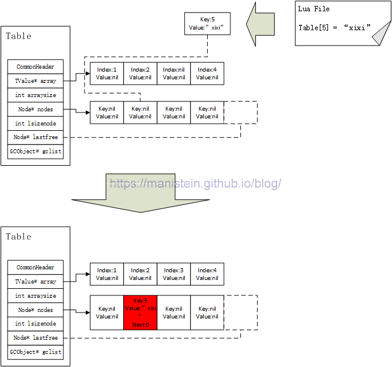
与此同时，一个key值为13，value值为”manistein”的元素也要对table进行赋值，经过之前阐述过的方式计算，得到index值为1，在这种情况下直接在hash表中进行查找，因为hash[1]的value域的值为”xixi”并不是nil，key值为5，与13并不相等，于是此时发生了hash碰撞，key值5经过转换运算，得到的hash表index的值为1，此时他就在这个位置上，因此key值为13的新元素需要被移走，lastfree指针，此时向左移动，并且将key值为13，value值为”manistein”的元素，赋值到lastfree指向的位置上（即hash[3]的位置上），并且将hash[1]的key的next指向lastfree指针所指的位置，如图11所示：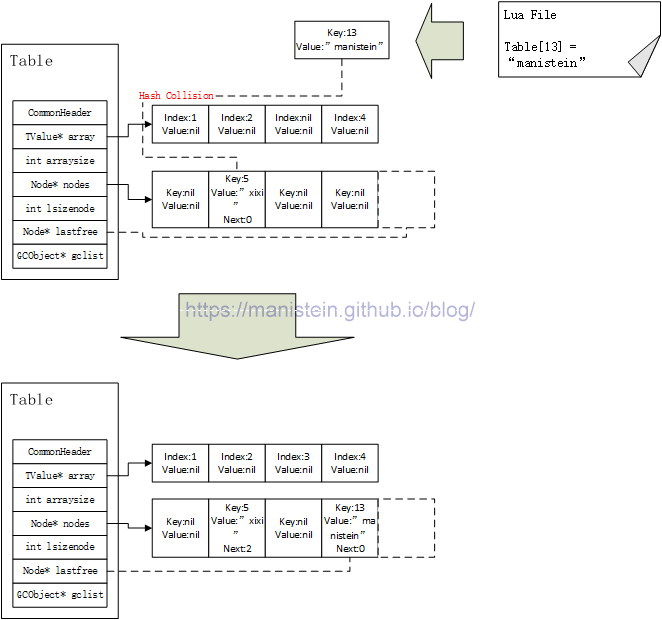
又再次，一个key值为7，value值为”wu”的元素要对table进行赋值，经过计算得到其对应的hash表index值为3，此时hash[3]已经被占用，此时需要计算，占据在这里的元素的key值，其真实对应的hash表index其实是1，因为hash[1]被占用才被移动到这里，因为这个元素计算得到的index与当前位置并不匹配，因此lastfree指针需要继续向左移动，并将key值为13的元素迁移到这里，并更新其前置节点的next域，最后将key值为7的元素，赋值到hash[3]的位置上，如图12所示：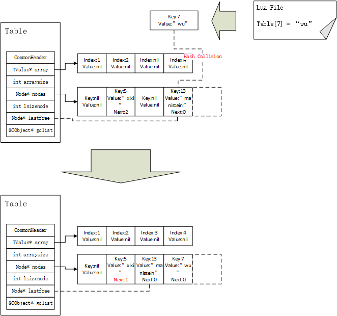
本节花费和较大的篇幅，阐述了table域的更新和插入操作，以及插入可能出现的各种情况，不过目前为止，我们的操作并未触发任何resize操作，接下来的一节，将阐述resize操作的具体流程。
table的resize操作
上一节，我们介绍了table值的更新和插入的操作，不过均是在hash表空间充足的情况下进行的。当hash表已满，且又有新的元素要插入hash表时，将触发table的resize操作。他的操作如下面步骤所示：
- 计算table中，array和hash表中的所有value值不为nil的元素总数，记为total_element
- 因为新插入一个元素，因此total_element += 1
- 创建一个nums[32]的数组，nums[i]表示key值为int型，且key值在(2i-1, 2i]范围内(lua脚本里table的int型下标，如t[1]的key在(2-1, 20]这个区间)，并且value不为nil的元素个数，它本质是统计所有的int key，如果在一个一维数组中，各个元素的分布情况，它将作为后面确定arraysize的重要依据
统计array在nums数组中，不同区间的分布情况，其伪代码为：
1
2
3
4
5
6
7
8
9
10
11
12
13
14
15
16
17
18
19
20
21
22
23
24
25
26
27
28
29
30int i = 0;
int j = 0;
int twotoi = 1;
for (; i < 32; i ++, twotoi *= 2) {
for (; j < twotoi; j ++) {
if (!is_nil(array[j])) {
nums[i] ++;
}
}
}
```c
* 统计hash表元素在nums数组中，不同区间的分布情况，其伪代码为：
```c
// ceillog2函数片段
int i = 0;
for (; i < 32; i ++) {
if (pow(2, i) >= hash.key) {
return i;
}
}
return i;
// -----------------------------
// 计算hash在nums中的分布函数片段
int i = 0;
for (; i < pow(2, lsizenode); i++) {
if (is_int(hash[i].key) && !is_nil(hash[i].value_)) {
int k = ceillog2(hash[i].key); //
nums[k] ++;
}
}判断新插入元素new_element的key值是否为int型，如果是则令nums[ceillog2(new_element.key)]++
完成数组nums的统计之后，根据nums，计算新的arraysize，在arraysize范围内，值不为nil的元素要超过arraysize的一半，其计算公式为：
1
2
3
4
5
6
7
8int i = 0;
int asize = 0;
for (; i < 32; i++) {
asize += nums[i];
if (asize > pow(2, i) / 2) {
arraysize = pow(2, i);
}
}计算在arraysize范围内，有效的元素个数，记为array_used_num
- 当arraysize比原来大时，扩展原来的array到新的尺寸，并将hash表中，key值<=arraysize的元素转移到array中，并将hash表大小调整为ceillog2(total_element - array_used_num)，同时对每个node进行rehash重新定位位置
- 当arraysize比原来小时，缩小原来的array到新的尺寸，并将array中，key值超过arraysize的元素转移到hash表中，此时hash表大小调整为ceillog2(total_element - array_used_num)，同时对每个node进行rehash计算，重新定位位置
现在我们来看一个例子，如图13所示，Table的array和hash表均已经占满，hash表中有3个key值为int类型的Node，此时要向Table插入一个key值为7，value值为”wu”的元素，因为7超出了array的大小，因此会尝试插入hash表。由于hash表中，没找到与之相等key的节点，因此要执行插入操作，而此时hash表已经满了，因此要进行resize操作。按照上面所说的流程，我们将array和hash表中，所有以int类型为key的元素，映射到一个一维数组中，并且用不同的颜色区分他们所处的区间，图13标记了数组下标区间和nums数组之间的关系，同一色块内的不为nil的元素，就是nums[i]的值，通过图13，我们现在更能清楚地理解nums数组，就是统计不同范围内的有效值。最后当arraysize为8的时候，array的利用率超过了一半，因此数组大小调整为8，hash表中的int key转移到了array中，我们的total_element一共是9个，其中7个在array中，因此hash表只剩下，total_element - array_used_num = 9 - 7 = 2，hash表的size调整为2，同时，Node重新计算hash值，重新分配了hash位置，最后得到图13最下部的结果。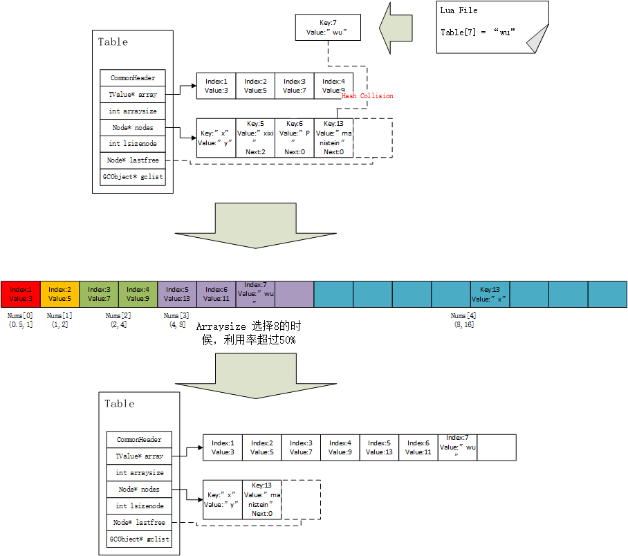
table的迭代
现在我们来看一下table的迭代机制，我们提供了luaH_next函数来进行迭代操作，这个函数的声明如下所示：1
int luaH_next(struct lua_State* L, struct Table* t, TValue* key);
第一个参数是我们正在使用的lua虚拟机状态实例，第二个参数是表示我们要进行迭代的table，第三个参数传入的是一个key值。调用的结果是，将传入的key的下一个key和value压入栈中。当传入的key值是nil值时，将1和array数组的第一个值入栈。如图14所示，是传入key值为nil的情况：
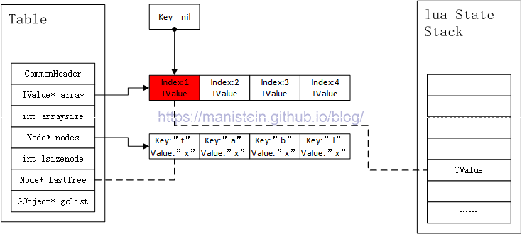
当我们传入一个值不为nil，key为int类型，且在arraysize范围内的，并且不是array的最后一个元素的情况下，我们将会把当前array元素的下一个index和value值入栈，如图15所示：
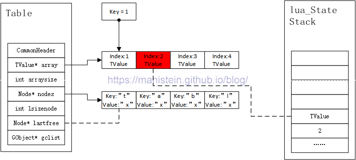
当我们传入的key值，是array数组的最后一个元素的index时，我们会将nodes列表的第一个node的key和value入栈，如图16所示：
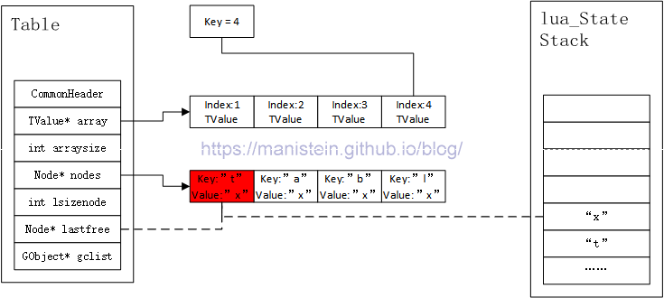
同样的，如果我们传入一个hash表中的key值时，他会将紧挨着自己的的下一个元素的key和value值入栈，如图17所示：
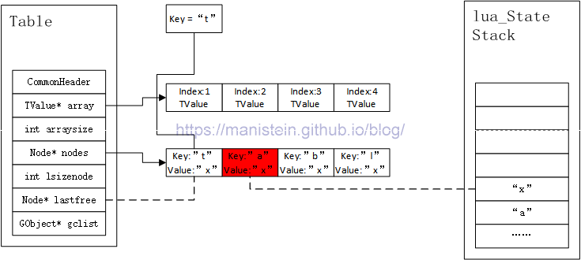
当我们能够查询到结果的时候，luaH_next函数将返回1，而当我们的传入的key是当前hash表的最后一个元素的key时，luaH_next函数将返回0。我们可以通过一个循环语句，调用luaH_next进行循环调用，最后实现对table的遍历。
程序实现
本文用了巨量的篇幅，通过图文的形式，阐述了table的数据结构和基本运作流程，我相信如果读者有认真阅读，理解这些应该不是难事，在理解了原理，在文章内贴上代码已经显得非常累赘，因此，如果读者有意愿阅读源码，可以直接上dummylua项目的github站点上查看代码，或者直接阅读lua-5.3中的ltable.h和ltable.c内部的代码。
结束语
到目前为止，我不仅完成了table设计实现篇，也完成了整个《构建Lua解释器》系列的第一部分的开发和blog编写，第一部分花费了我数月之久，仅仅是table这篇我就用了半个月的业余时间，不可不谓之艰难，原创相当不易，希望大家转载注明出处，由于本人水平有限，如过对文章内容有异议，希望大家加以斧正，你们可以在QQ185017593群里找到我，我是群主欢迎大家的到来。
本系列的第二部分，我们将进入到Lua词法分析器、语法分析器以及虚拟机部分的开发，更激烈的战斗即将来临，敬请期待。
Reference
[1] why lua need a dummy node?